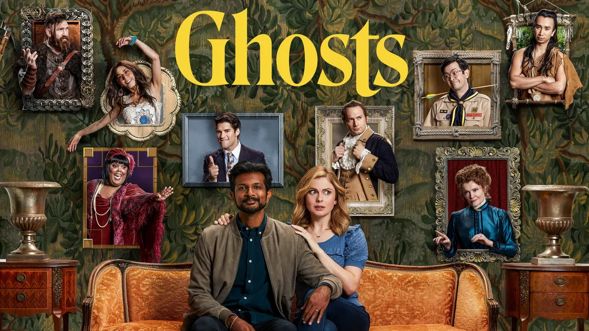

Samantha y Jay
Deciden convertir la mansión heredada, Woodstone Manor, en un hotel de alojamiento y desayuno . El problema es que la casa está habitada por un grupo de espíritus de distintas eras históricas que no quieren intrusos.
Al no poder verlos, su esposo toma las interacciones de Samantha como locuras, mientras ella actúa de puente entre el mundo de los vivos y los muertos.
A medida que Samantha aprende a convivir con los fantasmas, descubre que cada uno de ellos tiene una historia pendiente, deseos no cumplidos y una forma muy particular de ver el mundo moderno. Desde un aristócrata del siglo XVIII hasta un scout de los años 80, los espíritus aportan conflictos, humor y momentos inesperadamente emotivos.
Mientras Jay intenta seguir adelante con el proyecto del hotel sin comprender del todo lo que ocurre, Samantha se ve cada vez más involucrada en las dinámicas del “otro lado”, ayudando a los fantasmas a resolver sus asuntos inconclusos. Esta convivencia forzada genera situaciones tan caóticas como entrañables, donde el pasado y el presente chocan constantemente.
La serie combina comedia con toques de ternura, explorando temas como la convivencia, la empatía y la importancia de cerrar ciclos, todo dentro de un entorno sobrenatural que convierte lo cotidiano en algo completamente fuera de lo común.